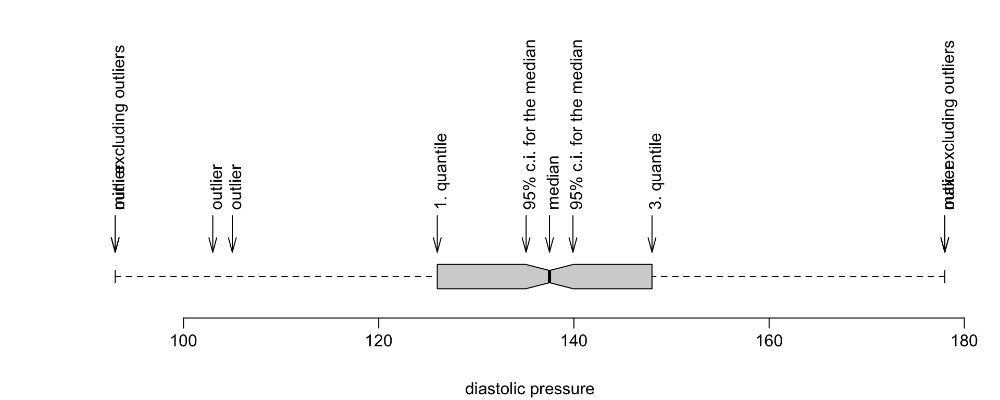

2.4 Visual statistics
Below, we present the most popular plots used in data visualisation. Some less popular, yet equally interesting plots can be found in Section 5.5.
The examples below use the socData dataset from the Przewodnik package.
2.4.1 Bar plot, barplot() function
Bar plots are among the most popular data visualisation forms. When looking at the bars, we usually compare their relative length, which is why this data visualisation form is best suited for ratio variables.
The barplot() function (see Figures 2.2 and 2.3) is used to present data as horizontal or vertical bars. We can use a vector of values, or a two-dimensional matrix as its argument.
The horiz argument specifies whether bars should be drawn horizontally or vertically. The las argument denotes the direction in which axes descriptions should be written. The legend() function can be used to add a legend – more information can be found in Section 5.5.5.
The col argument allows us to pick colours for bars and legends. If add=TRUE is selected, bars are added to the existing plot instead of creating a new one.
The code below generates bars shown in Figures 2.2 and 2.3. The table() function calculates the frequency matrix, which is then drawn with barplot().
socData <- read.csv("socData.csv", sep=";")
par(mar=c(4,6,1,1)+0.1,las=1)
tab <- table(socData$education)
barplot(tab, horiz = TRUE, las = 1)Figure 2.2: Horizontal bar graph for a number vector.
par(mar=c(4,6,1,1)+0.1,las=1)
tab2 <- table( socData$sex, socData$education )
barplot(tab2, las=1, beside = TRUE)
legend("topright",c("female","male"),fill=c("grey","black"))Figure 2.3: Vertical bar graph for the matrix of numbers.
2.4.2 Histogram, hist() function
A histogram is undoubtedly one of the most popular visual statistics which presents the distribution of values for quantitative variables.
The hist() function (see Figures 2.4 and 2.5) is used to present the count of observations in certain ranges with bars. The first argument is a vector of numbers.
The breaks argument specifies how the data is broken into intervals. It can be a single number that depicts how many intervals should be created, or a string with the name of the algorithm that sets the intervals (as described below). The freq and probability arguments are used to specify whether representations of frequencies or probability densities should be plotted. The right argument specifies whether intervals should be treated as left-open or right-open.
If we do not specify the number of intervals, that number will be calculated based on the count of observations and the variance of our variable. To describe the number or width of the intervals, we can use the breaks argument. If we provide a single number as the argument, it will be treated as a suggestion as to the expected number of automatically created intervals (it is merely a suggestion, because hist() may slightly increase or decrease this number). If a vector of numbers is provided, it will be treated as a vector of points that separate the intervals (intervals do not need to be equally wide). If a string is provided as the argument, it will be interpreted as the name of the algorithm that should be used to specify the intervals (possible values are: "Sturges", "Scott", "FD" and "Freedman-Diaconis").
Below, we present two sample hist() function calls. You can see the results in Figures 2.4 and 2.5.
We will start by presenting a histogram of the age variable. Since we have many rows in the data, we will suggest 15 intervals/boxes with the breaks argument. The other arguments in the code below describe the axes and the bar title.
hist(socData$age, breaks = 15, main="Age histogram", las=1,
ylab="Count", xlab="Age")Figure 2.4: Histogram for the age variable.
By changing the colours of borders and bars, we can obtain a visually appealing histogram. We can also change the vertical axis to present frequencies instead of counts.
hist(socData$age, breaks = 15, col="grey", border="white", las=1,
probability = TRUE, ylab="Frequency", xlab="Age")Figure 2.5: Change of fill colors and frame borders.
2.4.3 Box plot: boxplot()
One advantage of histograms is that they make it easy to identify regions of high or low density of values. On the other hand, they make it difficult to compare observation groups, because each group contains much information.
A box plot is a very popular way to compare distributions of values in groups.
The boxplot() function (see Figures 2.6 and 2.7) is used to present the distribution of a random variable with boxes. A single plot may be used to present the results for multiple variables (in order to compare their distributions), or to visualise a single variable split into observation groups (to compare its distributions in the groups).
The first argument of boxplot() denotes a vector, list of vectors, data frame, or formula with the variables that should appear in the box plot. Alternatively, multiple vectors of variables can be provided as subsequent arguments. If a vector of numbers is provided as an argument, a single box will be drawn. If multiple vectors are provided, multiple boxes will be drawn. If a formula that depicts the relation between a quantitative and qualitative variable is provided, a separate box will be created for each level of the qualitative variable.
Other arguments of boxplot() are:
range- specifies the range of an interval; observations outside this interval are treated as outliers,varwidth- specifies whether the width of the box should be proportional to the square root of the count of observations in the vector,outline- specifies whether outliers should be drawn.
Below, we present two examples of boxplot(). The results are shown in Figures 2.6 and 2.7.
Further vectors of numbers can be provided as subsequent arguments of boxplot(). The names argument can be used to specify axes labels. The horizontal argument is used to rotate the plot.
boxplot(socData$diastolic_pressure, socData$systolic_pressure,
horizontal = TRUE, names = c("Systolic","Diastolic"))Figure 2.6: Box charts for two vectors.
The first argument might be a formula. It is a convenient way to specify which groups should be compared. Below, we compare age within education groups. Additionally, with the vardwith argument, the box width reflects the count in the group that is compared.
boxplot(age~education, data = socData, varwidth=TRUE,
col="lightgrey", ylab="Age", las=1)Figure 2.7: Box chart showing variable age.
Box plots resemble boxes with whiskers, thus they are sometimes referred to as box-and-whisker plots. Almost all observations are located between the whiskers (apart from outliers). Outliers are considered observations that are further away from the quartiles than 1.5 IQR (1.5 is the default value of the range argument). The box specified by the quartiles contains 50% of all observations. The diagram below explains the meaning of each element.

2.4.4 Kernel density estimator, density() function
Both histograms and boxplots present value distributions for vectors of numbers. Two other statistics which are often used to that end are called the kernel density estimator (a smooth version of a histogram; calculated with the density() function) and empiric distribution function (calculated with the ecdf() function).
The concept of kernel density estimation is to find the estimator of density in a given point based on the concentration of observations in its vicinity. The observations that lie closer to the point of interest influence the estimator with greater weights than those located further away. The template of weights is specified by a parameter called the kernel. Bandwidth, in turn, specifies which weights are considered close.
The density() function (see Figures 2.8 and 2.9) finds the kernel density estimator for a vector of numbers. The first argument is the vector of values for which we want to calculate the density.
The from and to arguments specify the beginning and end of the range in which the density is calculated. The n argument denotes the number of points in which the density value should be calculated (the density is calculated for a regular point grid). The kernel and bw parameters are used to specify the kernel type and the bandwidth. The density() function returns a density class object whose components store the density values in the specified points. The objects of this class can be visualised with the plot() function.
The default density estimate value is calculated using a Gaussian kernel. You can browse the help for density() to find out about other kernel types and the differences between them. Many options are possible, for instance square or triangular kernels. See the kernel parameter for more information.
The bandwidth can be specified manually. Alternatively, you can specify a rule that will automatically set the best bandwidth. The stats package implements five different methods of automatic bandwidth selection.
The default rule is the “rule of thumb” (used when bw="nrd0"), as suggested by Silverman. According to this rule, the bandwidth h is calculated as follows:
\[\begin{equation} h_{bw.nrd0}=0.9\textrm{min}(\hat{\sigma}, IQR/1.34)n^{-1/5}, \tag{2.1} \end{equation}\]
where \(\delta\) is the standard deviation estimation , \(IQR\) is the interquartile range from the sample, and \(n\) is the number of observations. The “magical” constant \(1.34\) stems from the fact that \(IQR/1.34\approx\sigma\) for a normal distribution. Another popular rule is the Scott’s rule which is used when bw="nrd". The bandwidth is then calculated as follows:
\[\begin{equation} h_{bw.nrd}=1.06\hat{\sigma} n^{-1/5}. \tag{2.2} \end{equation}\]
You can also choose other rules of bandwidth selection. For instance, you can choose some rules based on cross validation: unbiased - when bw="ucv", and biased - when bw="bcv". In most cases, the best bandwidth estimation is obtained with the Sheather-Jones method.
Below, we present examples of two density estimations calculated for different bandwidth parameters (the former was selected automatically, the latter - manually). You can see the results of those instructions in Figures 2.8 and 2.9.
plot(density(socData$age), main="Age distribution")Figure 2.8: Nuclear density estimator with automatically selected window width.
If we consider the smoothing bandwidth too wide, we can adjust it manually. The example below shows how to reduce it to the value of 1.5.
plot(density(socData$age, bw=1.5), main="Age distribution", type="h")Figure 2.9: Nuclear estimator with window width set to 1.5.
Another statistic which is helpful when we describe the distribution of a observation vector is the empirical distribution function. It can be calculated with the ecdf() function.
The empirical distribution function is a function which describes what percentage of observations have values which are less than x.
The ecdf() function returns an object of the ecdf class. An overloaded version of the plot() function is implemented for this class to visualise the empirical distribution (see the example in Figure 2.10).
plot(ecdf(socData$age), main="Age distribution function")Figure 2.10: Empirical distribution for age.
The distribution function can also be used to compare multiple observation groups. You only need to show distribution functions for different groups in a single plot (the add argument).
The example below shows two distribution functions in a single plot, one for men, the other for women.
library("dplyr")
men <- filter(socData, sex == "male")
women <- filter(socData, sex == "female")
plot(ecdf(men$age), main="Age / sex", pch=21)
plot(ecdf(women$age), add=TRUE, col = "grey")Figure 2.11: Two empirical distribution allow for population comparisons.
2.4.5 Scatter plot, scatterplot() function
To show the relation between two numerical variables, scatter plots are frequently used.
R offers multiple ways of creating scatter plots. The easiest method is to use the plot() function. Below, however, we present the car::scatterplot() function, which provides some additional options. Among those options, there are: data presentation in groups, and the possibility to add a trend line or a curve to the data.
The first argument can contain either two vectors representing variables to be shown in the diagram, or a formula specifying two variables from a given dataset.
By default, boxplots are also drawn in the axes. They visualise variable distributions. This behaviour can be changed by modifying the boxplots argument, e.g. boxplots="x" makes the boxplots appear only in the Ox axis. The car library features a copy of scatterplot() which is called sp(). It yields the same results, but is much quicker to type.
A scatter plot can also feature a linear regression line (the line is drawn based on the reg.line value, which is reg.line=TRUE by default; setting reg.line=FALSE will make the line disappear) and a smooth regression curve (the curve is only drawn when smooth=TRUE, which is the default value). In our example (Figure 2.13), the scatter plot for two variables (systolic and diastolic blood pressure) is presented in two subpopulations specified by the sex variable. The scatter plot allows us to see whether there is a clear relation between the variables studied, and whether that relation remains the same in the subpopulations.
The results of the instructions presented below are shown in Figures 2.12 and 2.13. The first argument of sp() is a formula which specifies which variable should be shown in the Ox axis, and which one in the Oy axis. The pch argument specifies the shape of the points drawn.
library("car")
sp(diastolic_pressure~systolic_pressure, data=socData,
smooth=FALSE, reg.line=FALSE, pch=19)Figure 2.12: Dot chart for two variables.
After the | sign in the formula, we can also specify a conditioning variable. In the example below, each sex is drawn in the plot with a different shape and colour. Additionally, a trend line is added to each set of points.
sp(diastolic_pressure~systolic_pressure|sex, data=socData,
smooth=FALSE, lwd=3, pch=c(19,17))Figure 2.13: We add trend lines and mark data for different genders.
Scatter plots are a very useful way to detect and describe linear or monotonic relations between pairs of variables.
When we have more variables, we can use the pairs(), scatterplot.matrix() or YaleToolkit::gpairs() functions. They draw a relation matrix between each pair of the variables analysed.
2.4.6 Mosaic plot, mosaicplot() function
How can we show a relation between two or more qualitative variables? One possibility is to use a bar plot (barplot()). Another method is to use a mosaic plot, which is less known, yet very powerful.
The mosaicplot() function (see Figures 2.14 and 2.15) presents the count of values in a dataset using rectangular areas. Those rectangles are placed in such a way that it is easy to notice (1) whether two variables correlate, and (2) what the frequencies for individual values and pairs of values are.
Let us present this kind of plot with two examples. The results of the instructions below are shown in Figures 2.14 and 2.15.
The first plot presents the relative frequency of various education groups. The rectangles have a fixed height, but they differ in width. The wider the rectangle, the more frequent the group.
mosaicplot(~education, data=socData, main="", border="white")Figure 2.14: Mosaic chart showing the frequency of variable education.
The other plot presents the relation between education and employment. Again, the width of a rectangle corresponds to the relative frequency of the given education group. The height, in turn, signifies the relative frequency of those employed in different education groups.
Importantly, the mosaic plot resembles a regular squared pattern when two variables are independent. Any kind of correlation is visible at first sight. The plot below shows that highest percentage of people employed is present among those with tertiary education.
mosaicplot(~education+employment, data=socData, border="white",
col=c("grey40", "grey70"))Figure 2.15: Mosaic chart showing the relationship between employment and education.
One mosaic plot can show results for two or more enumerated variables. Still, attention should be given when selecting multiple variables - the higher the number of variables or the number of their values, the lower the readability of the plot.